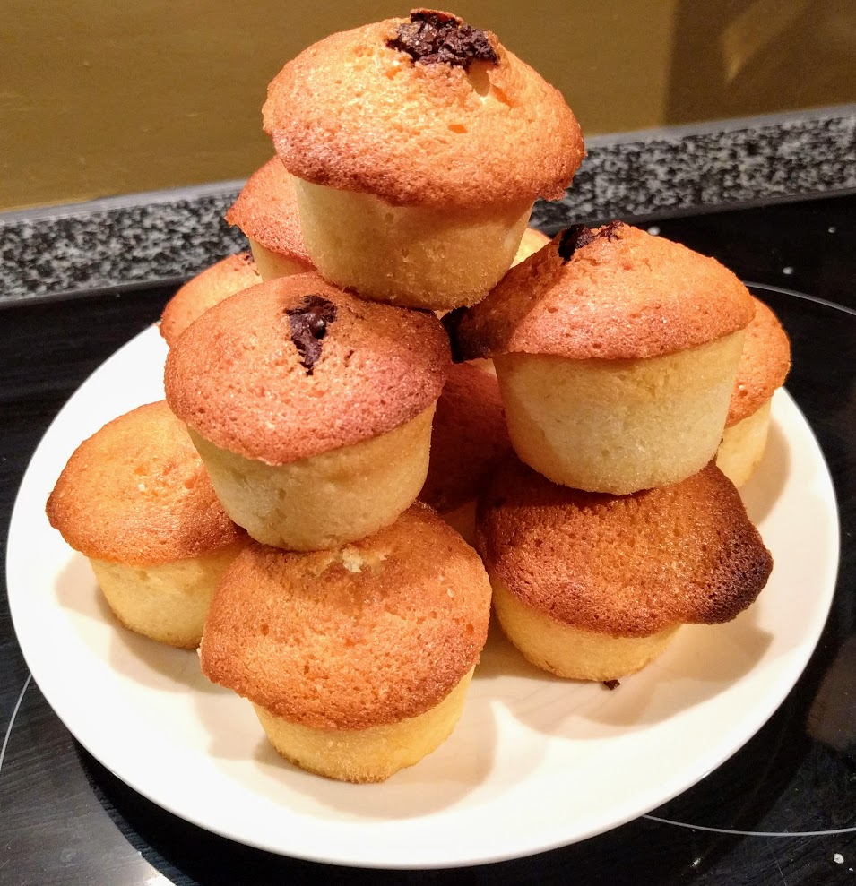

Visitandines

Pour une demi-douzaine de visitandines :
- 75g de beurre ramolli
- 3 blancs d'œufs
- 75g de farine
- 100g de sucre en poudre
- 50g de noix de coco râpée
- (Facultatif) Une demi-douzaine de carreaux de chocolat noir
- une pincée de sel
- Préchauffer le four à 190°C (thermostat 6).
- Mélanger la farine, le sucre et la poudre de noix de coco dans un saladier.
- Battre les blancs en neige avec la pincée de sel. Il ne faut pas que la mousse obtenue soit trop ferme.
- Incorporer la grosses cuillères le mélange de farine, de sucre et de noix de coco, en mélangeant au fur et à mesure.
- Ajouter le beurre par petits dés, en continuant à mélanger vigoureusement jusqu'à obtenir une pâte homogène.
- Répartir le mélange obtenu dans des moules beurrés (ou anti-adhésifs). Si on veut, mettre un carreau de chocolat au centre de chaque tas de pâte (de façon à ce qu'il soit caché dedans). Enfourner 25 minutes.
- Laisser tiédir un peu avant dégustation.
Variante : On peut remplacer les 50g de noix de coco râpée par 60g d'amandes en poudre.
Retour à la liste des recettes